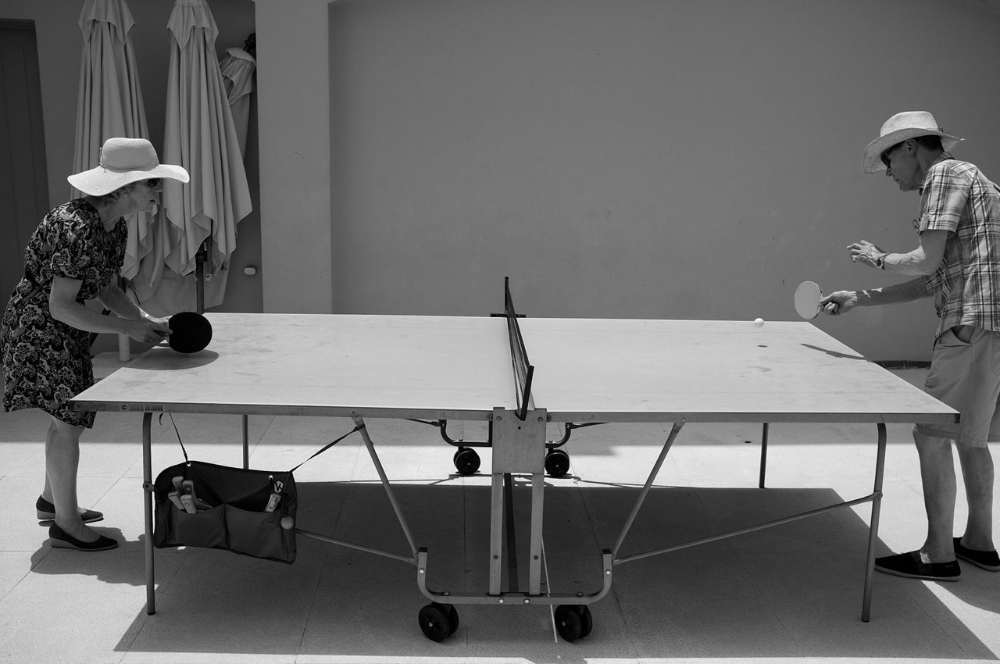

健康 與 老化
我國65歲以上的老年人口於民國82年達149萬人，占總人口比率超過7％，使我國成為高齡化社會，二十年後，至103年底已達280萬8,690人，占總人口11.99％，堪稱人口老化迅速的國家。依據國家發展委員會(以下簡稱國發會)推計資料1顯示，我國可能將於107年擁有超過14%的老年人口，進入高齡社會之列，114年則可能超過20%，成為超高齡社會。這樣的人口發展趨勢，凸顯老人健康與社會照顧的重要性，除支持家庭照顧機制、老人經濟安全、友善高齡者居住與交通運輸的環境，及終身學習等新興議題外，亦可能影響就業人口組合，對整體社會生產力產生衝擊，以迎接即將到來的高齡社會。
人口老化是世界各國共同面臨的變遷經驗，我國與歐美日等已開發國家均面臨少子女化及人口老化問題。但歐美日等國人口結構，係歷經數百年的轉型經驗，台灣在短短幾十年間因為全國上下的努力，達到教育普及、家庭計畫成功、公共衛生有效控制傳染疾病發生、醫療技術進步及完善的全民健保制度，加上社會經濟、家庭結構的快速變遷，使得國人平均餘命延長，人口出生率下降，很快即形成與歐美工業國相似的老化人口結構。
世界各國面對高齡社會的挑戰，幾乎已達成一致的理念與共識。檢視國際高齡政策發展，健康與福祉已被聯合國認定為兩大主流議題，世界衛生組織更於西元2002年提出「活力老化」核心價值，認為欲使老化成為正面經驗，必須讓健康、參與及安全達到最適化狀態，提升老年生活品質；西元2012年世界衛生日更以「高齡化與健康」（Ageing and Health）為主題，認為保持健康才會長壽（Good health adds life to years）。
從社會觀念來看，傳統社會對於老人的刻板印象就是「老弱殘病窮」，彷彿老人就是社會上的弱勢族群，需要協助與照顧。正因為我們對老人留有這樣的刻板印象，致使長輩會因為消極負向的社會期待而自我弱化，忽略了自己其實對社會仍有能力、能有貢獻。反觀全世界人口也正同樣面臨高齡化的發展趨勢，但已開始推動正向積極的老化觀念，建立高齡社會的新圖像是帶動高齡社會正向發展的重要課題。
從整體需求來看，我國傳統的高齡照護主要聚焦在弱勢失能老人的照顧；但高齡人口多數是處於健康、亞健康狀況，失能人口比例遠低於他們。
延長健康重於延長生命
「芬蘭的長照政策目標，是縮短到老人臥床時間到兩週，而台灣是七年。這顯示我們應該投入更多心力在預防健康長輩失能，讓更多長輩可以延緩失能的速度，而非等到失能後政府才伸出援手。」 – 蔡欣潔
隨著年齡增長，長者落入失能狀態的風險也會逐漸增高，從公共衛生三段五級的觀念來看，要避免落入失能，最佳的方法就是積極維持身心靈的健康狀態。
以延長健康時間、減緩依賴程度做為行動理念，增進國民生理、心理、社會健康識能及自我保健概念，建構高齡整合醫療體系，結合科技提供智慧醫療照護，提升照護連續性，結合人文精神提供高品質之老年整合式醫療服務，使長輩享有健康尊嚴的高齡生活，全面提升老年生活品質。
參考資料:衛生福利部社會及家庭署 - 高齡社會白皮書;北歐老年照護考察特使蔡欣潔 - 為人類的晚年生活帶來幸福 http://www.npost.tw